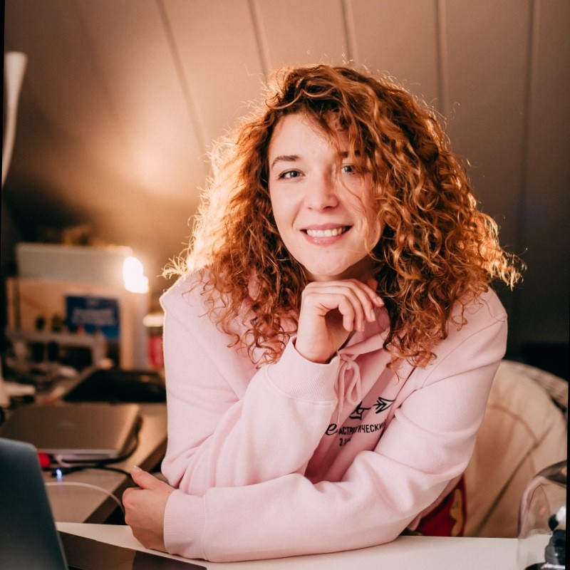

Violeta Skripachova
Test Engineer to-be
Riga, Latvia
Contact details
- My Linkedin account
- Feel free to mail me
- Mobile No: +37128861114
Summary
Hard working Crew Operator & Quality Manager with 7 years experience working in Crew Manning agency.
In process of studying Quality Assurance in IT.
Self-motivated person with strong wish to change my life.
Experience
-
WELL SIA
- Ensuring that all company procedure & policies meet quality standards (ISO, MLC, third-party requirements)
- Internal audit (Evaluating internal working procedures)
- Passing audit with Maritime Administration, Third-party Audit, ISO
- Maintaining Quality Management System in accordance with relevant regulation
- Making / analysing reports
- Managing crew changes for vessels
- Travel & relevant joining documentation management (crew certification validity & expiries)
- Review & management of crew training requirements
- Knowledge of the Maritime legislation including STCW, MLC, SOLAS & Flag State Authority regulations
-
ALGS GROUP SIA
- Communication with clients (strengthen the relationships with wholesale customers)
- Coordination purchase process
- Planing of sales
- Price planning
- B2B & B2C systems
Quality Manager - from Feb 2018 till Present
Crew Operator Assistant - from Mar 2015 till Present
Client and Product Manager - from May 2012 till Mar 2015
Education:
-
Transport and Telecommunication Institute (TSI)
- Bachelor of Social Sciences in Management, Business, Management, Marketing, and Related Support Services
-
Pushkin Lyceum
June 2009
Sept 2009 - Sept 2012
Licenses & Certifications
- Quality Assurance (QA1) - Manual Testing and Introduction to IT - JavaGuru
Skills
- Internal Audit
- Communication
- Analytical skills
- Adobe Photoshop
- Quality Assurance